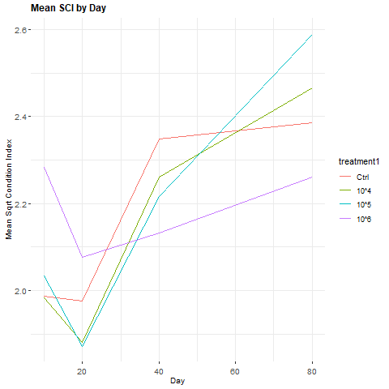

Multilevel models (also known as linear mixed models) are commonly used to model both fixed and linear effects. In the classical statistical sense, fixed effects are parameters that do not vary (there's some fixed coefficient that describes the true relationship between the parameter and independent variable for the population), while random effects are treated as random variables.1
Multilevel models are particular useful when the data have a hierarchical organization. (For instance, students may be grouped under teachers, who are in turn grouped under schools, which are in turn grouped under districts, which in turn...)
Multilevel models split the difference between aggregating the data within the groups and fitting separate models unique to each group.
In this way, we can see that multilevel models are similar to Bayesian hierarchical models, although classical multilevel models don't put proper priors on the distributions for the unobserved variables.
We can explore these similarities by applying a Bayesian hierarchical approach to a classical multilevel approach.
Specifically, we'll apply a Bayesian hierarchical approach to the data from "The world is your oyster: low-dose, long-term microplastic exposure of juvenile oysters," a study by the Centre for Environment Fisheries and Aquaculture Science (Cefas).
Oysters are superheroes of the sea. These bold bivalves can filter up to 50 gallons of water per day, purifying waterways.2 Unfortunately, wild oyster populations have crashed due to overharvesting -- and their filter-feeding makes them particularly vulnerable to ever-increasing levels of pollutants and plastics in our seas.
To better understand the affects of microplastics on oysters, researchers at Cefas conducted a study exposing juvenile oysters (Crassostrea gigas) to 4 different concentrations of \(6\mu m\) polystyrene microbeads (control \(0\), \(10^{4}\), \(10^{5}\), and \(10^{6}\) particles per liter). These concentrations were chosen to represent predicted short-term and long-term environmental scenarios, based on a review of existing literature.
Each of the four treatments was replicated 12 times (for 48 total tanks). Each tank contained two glass rods, each of which had 15 oysters attached (for 30 total oysters per tank).
The study ran for 80 days, with measurements taken on days 10, 20, 40, and 80. For each measurement, oysters were weighed and measured. 15 oysters were sampled to measure condition index (CI), and an additional 10 oysters were sampled to measure lysomal membrane stability (LMS).
CI is computed as \(\text{CI} = \frac{100 (\text{dry meat weight in g})}{(\text{shell weight in g})}\). CI is an indicator of the phsyiological state of the oyster; a low CI value provides evidence for major biological exertion (such as responding to environmental stress or disease). Shell length measures the distance from the hinge of the oyster to the edge of the bill (in millimeters). LMS, determined cytochemically based on labilization period, is another indicator of biological stress. We'll focus on CI for brevity.
Because the measured oysters are picked from rods, which are placed in tanks, multilevel (linear mixed effect) models are used.
Two different models are used, differentiated by the treatment variable used. In the first model, all four treatments are used; in the second model, a new treatment variable is created to compare the three lowest concentrations of microplastics against the highest concentration. These two models are equivalent to two-way ANOVA models with random effects.
Model 1
Model 2
Where, according to the original paper, "\(SCI = CI^{1/2}\), \(TREATMENT1\) and \(TREATMENT2\) are fixed effects of microplastics concentration, \(DAY\) is a fixed effect of duration of experiment at time of measurement, and \(TANK\) and \(ROD\) are random effects.
The original paper fit two variations of each model: one with Treatment factors and one without Treatment factors. These models were then compared using a likelihood ratio test to determine the significance of the Treatment factors.
These models are fit using the lme4 R package:
# fit model with no treatment effect
mod0 <- lme4::lmer(formula = SCI ~ 1 + day + (1 | tank / rod),
data = CI_df2,
REML = F)
# fit model with treatment1 effect
mod1 <- lme4::lmer(formula = SCI ~ 1 + treatment1 + day + treatment1:day + (1 | tank / rod),
data = CI_df2,
REML = F)
# fit model with treatment2 effect
mod2 <- lme4::lmer(formula = SCI ~ 1 + treatment2 + day + treatment2:day + (1 | tank / rod),
data = CI_df2,
REML = F)
# LRT tests
anova(mod1, mod0, test='LRT')
anova(mod2, mod0, test='LRT')
After running these likelihood ratio tests, the original paper found that treatment1 is not significant, "suggesting that the lowest three levels of [microplastics] are behaving similarly." For Model 2, the comparison of models with and without Treatment2 factors yields a p-value of 0.006, "giv[ing] statistical evidence that highest exposures (\(10^{6} \text{particles} L^{-1}\)) is acting differently to the other exposures."
We can recreate this analysis in a Bayesian setting by fitting mod1_bayes and mod2_bayes using hierarchical multilevel models. We can use R to wrangle the data and RStan to fit the models (and BUGS to sanity check). We'll use the following model:
We could fit mod1_bayes and mod2_bayes using both independent priors and Zellner's g-priors on the model coefficients. The independent priors and Zellner's g-priors result in nearly identical inference, and the MCMC chains for the models using independent priors run much faster (given the relatively large dataset).
### ------------------ ###
### define stan model ###
### independent priors ###
### ------------------ ###
CI_mod1_stan_str <- '
functions { // ============================================================== *
vector merge_missing( int[] miss_indexes , vector x_obs , vector x_miss ) {
int N = dims(x_obs)[1];
int N_miss = dims(x_miss)[1];
vector[N] merged;
merged = x_obs;
for ( i in 1:N_miss )
merged[ miss_indexes[i] ] = x_miss[i];
return merged;
}
}
data { // =================================================================== *
// observed data ---------------------------------------------------------- *
int<lower=0> N; // number of observations
int<lower=0> P; // number of covariates
vector[N] y; // response vector
matrix[N, P] X; // design matrix
// levels ----------------------------------------------------------------- *
int<lower=0> J_a1; // number of levels in tank var
int<lower=0> J_a2; // number of levels in rod var
int levs_a1[N]; // observed levels of tank
int levs_a2[N]; // observed levels of rod
// imputation, response --------------------------------------------------- *
int<lower=0> y_mis_N; // number of missing values, response
int y_mis_idx[y_mis_N]; // indices of missing values, response
}
parameters { // ============================================================= *
// regression ------------------------------------------------------------- *
real alpha0; // regression intercept coefficient
vector[P] beta; // regression slope coefficients
real<lower=0> tau; // regression error (precision)
// levels ----------------------------------------------------------------- *
vector[J_a1] a1;
vector[J_a2] a2;
real tau_a1;
real tau_a2;
// imputation, response --------------------------------------------------- *
vector[y_mis_N] y_impute; // imputed values, response
}
transformed parameters { // ================================================= *
// regression ------------------------------------------------------------- *
vector[N] mu; // regression mean
real<lower=0> sigma2; // regression error (variance)
real<lower=0> sigma; // regression error (stdev)
// imputation, response --------------------------------------------------- *
vector[N] y_merge;
// regression ------------------------------------------------------------- *
sigma2 = 1/tau;
sigma = sqrt(sigma2);
mu = alpha0 + a1[levs_a1] + a2[levs_a2] + X * beta;
// imputation, response --------------------------------------------------- *
y_merge = merge_missing(y_mis_idx, to_vector(y), y_impute);
}
model { // ================================================================== *
// priors ----------------------------------------------------------------- *
alpha0 ~ normal(0., 100);
beta ~ normal(0., 100);
tau ~ gamma(0.001, 0.001);
a1 ~ normal(0., tau_a1);
a2 ~ normal(0., tau_a2);
tau_a1 ~ gamma(0.001, 0.001);
tau_a2 ~ gamma(0.001, 0.001);
// regression (using combined observed + imputed) ------------------------- *
y_merge ~ normal(mu, sigma);
}
generated quantities { // =================================================== *
// Bayesian R^2
int nminusp; // (N - P)
vector[N] cy; // observed response - mean response
real SSE; // sum of squares error:
real SST; // sum of squares total:
real BR2; // Bayesian R^2
real BR2adj; // Adjusted Bayesian R^2
// outlier detection: CPOi
vector[N] r; // residuals (observed - expected)
vector[N] f_x; // likelihood
vector[N] CPO_inv; // inverse CPO
// Bayesian R^2
nminusp = N - P - 1; // minus 1 because intercept is estimated
cy = y_merge - mean(y_merge);
SSE = nminusp * sigma2;
SST = dot_product(cy, cy);
BR2 = 1 - SSE/SST;
BR2adj = 1 - (N - 1) * sigma2 / SST;
// outlier detection: CPOi
// (commented out to try to make the model a little quicker)
//r = y_merge - mu;
//for(i in 1:N) {
// f_x[i] = exp(normal_lpdf(y_merge[i] | mu[i], sigma));
// CPO_inv[i] = 1 / f_x[i];
//}
}
'
writeLines(text = CI_mod1_stan_str, con = file(paste0(root_dir, 'code/R/CI_mod1.stan')))
close(file(paste0(root_dir, 'code/R/CI_mod1.stan')))
Two of the condition indices are negative (presumably due to measurement errors), resulting in non-real SCI values. We can treat these as missing (completely at random) and have our Bayesian model handle them via multiple imputations.
When we prep the data for Stan, we'll need to recode the missing values as Inf because Stan doens't accept NA values.
### ------------------------ ###
### prep data for stan model ###
### ------------------------ ###
# recode for missing values
# (stan doesn't like NAs,
# so we feed it Infs and handle them in the model)
CI_df2 <- CI_df
CI_df2[is.na(CI_df2)] <- Inf
# vector of respsonse data
response_vector <- CI_df2$SCI
# matrix of grouping variables
stan_data_grouping_matrix <- matrix(data = c(CI_df2$tank,
CI_df2$rod),
nrow = nrow(CI_df2),
byrow = F,
dimnames = list(NULL, c('tank',
'rod')))
# model 1 design matrix: treatment 1
model1_design_matrix <- matrix(data = c(CI_df2$treatment1,
CI_df2$day,
CI_df2$treatment1 * CI_df2$day),
nrow = nrow(CI_df2),
byrow = F,
dimnames = list(NULL, c('treatment1',
'day',
'treatment1.day'
)))
# model 2 design matrix: treatment 2
model2_design_matrix <- matrix(data = c(CI_df2$treatment2,
CI_df2$day,
CI_df2$treatment2 * CI_df2$day),
nrow = nrow(CI_df2),
byrow = F,
dimnames = list(NULL, c('treatment1',
'day',
'treatment1.day'
)))
# model 1 data: treatment 1
mod1_bayes_data <- list(
# observed data
N = length(response_vector),
P = ncol(model1_design_matrix),
y = response_vector,
X = model1_design_matrix,
# individual covariates
X_treat = as.array(model1_design_matrix[, 1]),
X_day = as.array(model1_design_matrix[, 2]),
X_treatday = as.array(model1_design_matrix[, 3]),
# levels
J_a1 = length(unique(stan_data_grouping_matrix[, 1])),
J_a2 = length(unique(stan_data_grouping_matrix[, 2])),
levs_a1 = as.array(stan_data_grouping_matrix[, 1]),
levs_a2 = as.array(stan_data_grouping_matrix[, 2]),
# imputatio, response
y_mis_N = length(CI_df2$SCI[CI_df2$SCI == Inf]),
y_mis_idx = as.array(which(CI_df2$SCI == Inf))
)
# model 2 data: treatment 2
mod2_bayes_data <- list(
# observed data
N = length(response_vector),
P = ncol(model2_design_matrix),
y = response_vector,
X = model2_design_matrix,
# individual covariates
X_treat = as.array(model2_design_matrix[, 1]),
X_day = as.array(model2_design_matrix[, 2]),
X_treatday = as.array(model2_design_matrix[, 3]),
# levels
J_a1 = length(unique(stan_data_grouping_matrix[, 1])),
J_a2 = length(unique(stan_data_grouping_matrix[, 2])),
levs_a1 = as.array(stan_data_grouping_matrix[, 1]),
levs_a2 = as.array(stan_data_grouping_matrix[, 2]),
# imputatio, response
y_mis_N = length(CI_df2$SCI[CI_df2$SCI == Inf]),
y_mis_idx = as.array(which(CI_df2$SCI == Inf))
)
Finally, we fit the RStan models:
### -------------- ###
### fit stan model ###
### -------------- ###
# fit model 1: treatment1
mod1_bayes <- stan(
file = paste0(root_dir, 'code/R/CI_mod1.stan'),
data = mod1_bayes_data,
seed = RAND_SEED,
pars = c('alpha0',
'beta',
'sigma2',
'BR2', 'BR2adj'),
include = T,
chains = 4,
warmup = 1000,
iter = 100000,
init = list(list('alpha0' = 0,
'beta' = rep(0, CI_mod1_stan_data$P),
'tau' = 1,
'sigma2' = 1,
'sigma' = 1,
'a1' = rep(0, CI_mod1_stan_data$J_a1),
'a2' = rep(0, CI_mod1_stan_data$J_a2),
'tau_a1' = 1,
'tau_a2' = 1),
list('alpha0' = 0,
'beta' = rep(0, CI_mod1_stan_data$P),
'tau' = 1,
'sigma2' = 1,
'sigma' = 1,
'a1' = rep(0, CI_mod1_stan_data$J_a1),
'a2' = rep(0, CI_mod1_stan_data$J_a2),
'tau_a1' = 1,
'tau_a2' = 1),
list('alpha0' = 0,
'beta' = rep(0, CI_mod1_stan_data$P),
'tau' = 1,
'sigma2' = 1,
'sigma' = 1,
'a1' = rep(0, CI_mod1_stan_data$J_a1),
'a2' = rep(0, CI_mod1_stan_data$J_a2),
'tau_a1' = 1,
'tau_a2' = 1),
list('alpha0' = 0,
'beta' = rep(0, CI_mod1_stan_data$P),
'tau' = 1,
'sigma2' = 1,
'sigma' = 1,
'a1' = rep(0, CI_mod1_stan_data$J_a1),
'a2' = rep(0, CI_mod1_stan_data$J_a2),
'tau_a1' = 1,
'tau_a2' = 1)),
cores = 4,
control = list(max_treedepth = 15,
adapt_delta = 0.99),
# debug
#chains = 1,
#warmup = 1000,
#iter = 5000,
#init = list(list('alpha0' = 0,
# 'beta' = rep(0, CI_mod1_stan_data$P),
# 'tau' = 1,
# 'sigma2' = 1,
# 'sigma' = 1,
# 'a1' = rep(0, CI_mod1_stan_data$J_a1),
# 'a2' = rep(0, CI_mod1_stan_data$J_a2),
# 'tau_a1' = 1,
# 'tau_a2' = 1)),
refresh = 1000
)
#summary(mod1_bayes)
print(mod1_bayes)
# fit model 2: treatment2
mod2_bayes <- stan(
file = paste0(root_dir, 'code/R/CI_mod1.stan'),
data = mod2_bayes_data,
seed = RAND_SEED,
pars = c('alpha0',
'beta',
'sigma2',
'BR2', 'BR2adj'),
include = T,
chains = 4,
warmup = 1000,
iter = 100000,
init = list(list('alpha0' = 0,
'beta' = rep(0, CI_mod1_stan_data$P),
'tau' = 1,
'sigma2' = 1,
'sigma' = 1,
'a1' = rep(0, CI_mod1_stan_data$J_a1),
'a2' = rep(0, CI_mod1_stan_data$J_a2),
'tau_a1' = 1,
'tau_a2' = 1),
list('alpha0' = 0,
'beta' = rep(0, CI_mod1_stan_data$P),
'tau' = 1,
'sigma2' = 1,
'sigma' = 1,
'a1' = rep(0, CI_mod1_stan_data$J_a1),
'a2' = rep(0, CI_mod1_stan_data$J_a2),
'tau_a1' = 1,
'tau_a2' = 1),
list('alpha0' = 0,
'beta' = rep(0, CI_mod1_stan_data$P),
'tau' = 1,
'sigma2' = 1,
'sigma' = 1,
'a1' = rep(0, CI_mod1_stan_data$J_a1),
'a2' = rep(0, CI_mod1_stan_data$J_a2),
'tau_a1' = 1,
'tau_a2' = 1),
list('alpha0' = 0,
'beta' = rep(0, CI_mod1_stan_data$P),
'tau' = 1,
'sigma2' = 1,
'sigma' = 1,
'a1' = rep(0, CI_mod1_stan_data$J_a1),
'a2' = rep(0, CI_mod1_stan_data$J_a2),
'tau_a1' = 1,
'tau_a2' = 1)),
cores = 4,
control = list(max_treedepth = 15,
adapt_delta = 0.99),
# debug
#chains = 1,
#warmup = 1000,
#iter = 5000,
#init = list(list('alpha0' = 0,
# 'beta' = rep(0, CI_mod1_stan_data$P),
# 'tau' = 1,
# 'sigma2' = 1,
# 'sigma' = 1,
# 'a1' = rep(0, CI_mod1_stan_data$J_a1),
# 'a2' = rep(0, CI_mod1_stan_data$J_a2),
# 'tau_a1' = 1,
# 'tau_a2' = 1)),
refresh = 1000
)
#summary(mod2_bayes)
print(mod2_bayes)
In BUGS, this model looks as follows:
### ----- ###
### MODEL ###
### ----- ###
model{
# ---------------- #
# MODEL LIKELIHOOD #
# ---------------- #
for(i in 1:N) {
# Note: Some SCI values are NA, but OpenBUGS handles this missingness for us
SCI[i] ~ dnorm(mu[i], tau)
# Note: to run this file for mod_1, run the first mu[i] line and comment the second;
# to run this file for mod_2, comment the first mu[i] line and run the second.
mu[i] <- alpha0 + beta[1] * treatment1[i] + beta[2] * day[i] + beta[3] * treatment1.day[i] + alpha1[tank[i]] + alpha2[rod[i]]
#mu[i] <- alpha0 + beta[1] * treatment2[i] + beta[2] * day[i] + beta[3] * treatment2.day[i] + alpha1[tank[i]] + alpha2[rod[i]]
}
# ------ #
# PRIORS #
# ------ #
alpha0 ~ dnorm(0., 0.0001)
alpha1[1] <- 0
for(i in 2:K_tank) {
alpha1[i] ~ dnorm(0., tau_alpha1)
}
alpha2[1] <- 0
for(i in 2:K_rod) {
alpha2[i] ~ dnorm(0., tau_alpha2)
}
for(i in 1:P) {
beta[i] ~ dnorm(0., 0.0001)
}
tau ~ dgamma(0.001, 0.001)
sigma2 <- 1/tau
tau_alpha1 ~ dgamma(0.001, 0.001)
tau_alpha2 ~ dgamma(0.001, 0.001)
# ----------- #
# DIAGNOSTICS #
# ----------- #
# Bayesian R^2
SCIbar <- mean(SCI[])
for(i in 1:N){
cy[i] <- SCI[i] - SCIbar
}
sse <- (N - P) * sigma2
sst <- inprod(cy[], cy[])
BR2 <- 1 - sse/sst
BR2adj <- 1 - (N - 1) * sigma2/sst
# Outlier detection and Deviance
for(i in 1:N) {
# Outlier detection: CPOi
# residual: observed - expected
r[i] <- SCI[i] - mu[i]
# normal likelihood (parameterized with precision)
f_x[i] <- sqrt(tau/(2 * pi))*exp(-0.5*tau*r[i]*r[i]) # 2pi approx 6.2832
log_fx[i] <- log(f_x[i])
# CPOi_inv = reciprocal of likelihood
CPO_inv[i] <- 1/f_x[i]
# Outlier detection: Cumulative
cuy[i] <- cumulative(SCI[i], SCI[i])
add[i] <- pow(logit(cuy[i]), 2)
}
# Outlier detection: Cumulative (cont'd)
a <- sum(add[])
# Deviance
D <- -2 * sum(log_fx[])
}
### ---- ###
### DATA ###
### ---- ###
# ------ #
# params #
# ------ #
list(# Number of observations
N = 694,
# Number of covariates
P = 3,
# Number of tank levels
K_tank = 48,
# Number of rod levels
K_rod = 2,
# pi approx (for deviance)
pi = 3.1415926535
)
# --------------------- #
# model 1 design matrix #
# --------------------- #
# ./data/OUT/Condition-Index--for-BUGS--treatment1desmat.csv
# (colnames changed after pasting)
int[] treatment1[] day[] treatment1.day[] tank[] rod[] SCI[]
1 1 10 10 1 1 1.950799992
[...]
1 4 80 320 48 2 2.426592416
END
# --------------------- #
# model 2 design matrix #
# --------------------- #
# ./data/OUT/Condition-Index--for-BUGS--treatment1desmat.csv
# (colnames changed after pasting)
int[] treatment2[] day[] treatment2.day[] tank[] rod[] SCI[]
1 0 10 0 1 1 1.950799992
[...]
1 1 80 80 48 2 2.426592416
END
### ----- ###
### INITS ###
### ----- ###
list(
alpha0 = 0,
beta = c(0, 0, 0),
tau = 1,
tau_alpha1 = 1,
tau_alpha2 = 1
)
# + Gen Inits for all the alpha1's and alpha2's
The 95% credible set (CS) for \(\beta_{1}\), the coefficient for \(TREATMENT1\), is \([-0.01824, 0.1484]\). Because this CS contains 0, \(TREATMENT1\) is not significant in a Bayesian sense. (See Appendix Fig 1.)
The 95% CS for \(\beta_{1}\), the coefficient for \(TREATMENT2\), is \([0.08998, 0.5183]\). Because this CS does not contain 0, \(TREATMENT2\) is significant in a Bayesian sense, indicating that the lowest three concentrations of MPs do differ from the highest concentration.
Additionally, the 95% CS for \(\beta_{3}\), the coefficient for the interaction of \(TREATMENT2*DAY\), is \([-0.01229, -0.002742]\), indicating the the lowest three concentrations and highest concentrations significantly differ in their effects over time, as well.
The original paper did not look for outliers. However, in our Bayesian approach, there appear to be six potential outliers using a relatively conservative threshold of \(CPO < 0.001\).
If we remove these potential outliers from the data and re-fit the models, the inference for \(TREATMENT1\) and \(TREATMENT2\) does not change much; however, the model fit improves, with \(\text{Bayesian} R^{2}_{Adjusted}\) increasing from \(0.2054\) to \(0.2995\) for Model 1 and from \(0.2054\) to \(0.2996\) for Model 2, and the Deviance nearly halving from \(850.3\) to \(438.3\) for Model 1 and from \(850.4\) to \(439.5\) for Model 2.
Between the original paper and our Bayesian hierarchical analysis, there is both classical and Bayesian statistical evidence that the three lowest levels of microplastics concentration (0, \(10^4\), and \(10^5\) particles per liter) differ significantly from the highest level of microplastics concentration (\(10^6\) particles per liter).

Graphical evidence also suggests that condition index of oysters vary significantly over time for the lowest three concentrations compared to the highest. Additionally the 95% credible set for the \(TREATMENT2.DAY\) coefficient is \([-0.01229, -0.002742]\), indicating that this is the case. This suggests the importance of a study longer than 80 days in length to measure the long-term effects of microplastics on oyster condition index (particularly given that oysters live about six years on average in the wild and up to 20 years in captivity).
- The definitions of fixed and random effects can shift, as Andrew Gelman notes. ↩
- https://www.cbf.org/about-the-bay/more-than-just-the-bay/chesapeake-wildlife/eastern-oysters/oyster-fact-sheet.html ↩